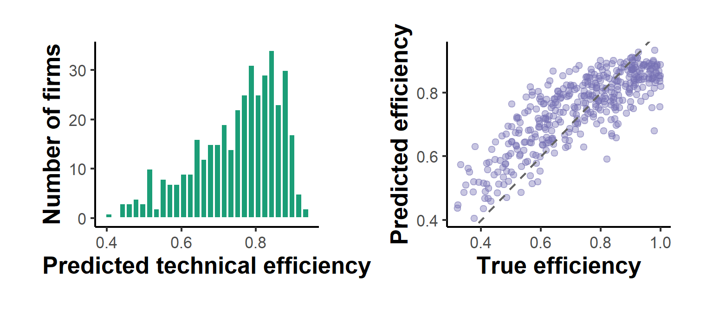
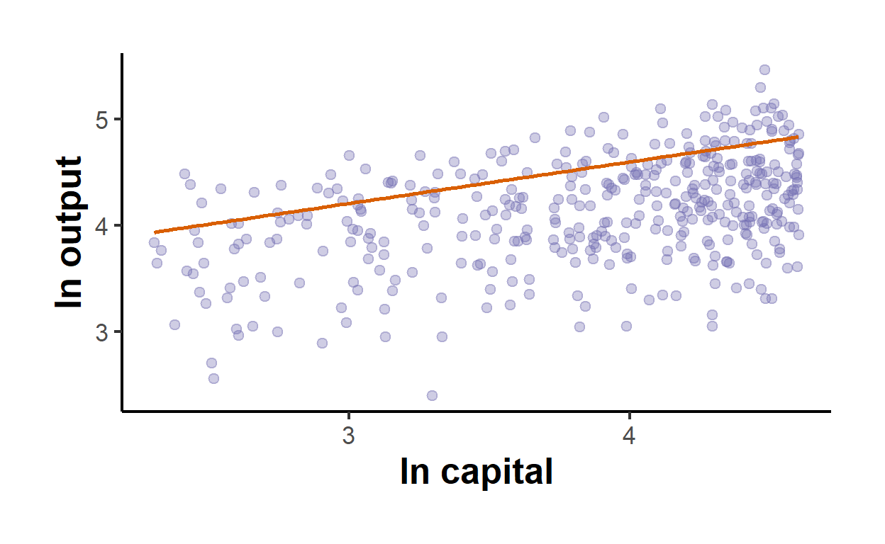
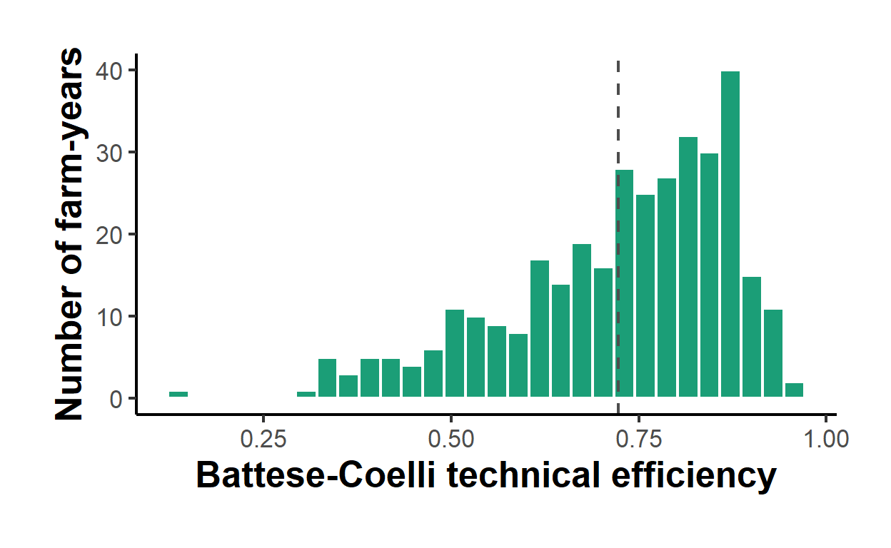
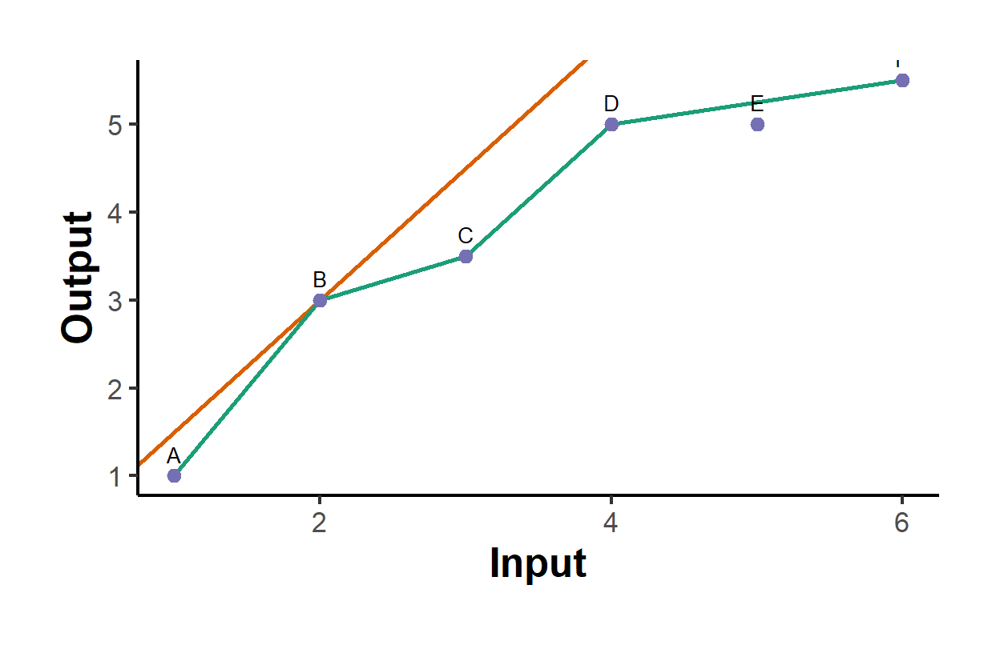

Chapter 65 Frontier and Efficiency Analysis
Most regression models in this book describe an average relationship. Conditional mean methods ask how the typical unit responds to its inputs, and a fitted value sitting above or below the regression line is treated as noise. Efficiency analysis asks a different question. It assumes that there exists a best-practice boundary, a frontier, that describes the maximum output obtainable from a given bundle of inputs (or, dually, the minimum cost of producing a given output), and it measures how far each production unit operates from that boundary. The gap is not noise. It is interpreted economically as inefficiency, a shortfall attributable to managerial slack, organizational friction, or suboptimal use of resources.
This shift in interpretation places frontier analysis squarely within applied microeconometrics and productivity measurement rather than within ordinary curve fitting. The unit of analysis is a decision-making unit, a firm, hospital, bank branch, farm, school, or country, that converts inputs into outputs. The objects of interest are the technology that defines what is feasible and the efficiency scores that rank units against the feasible best. The intellectual roots trace to Koopmans (1951) on activity analysis, Debreu (1951) on the coefficient of resource utilization, and especially Farrell (1957), who first decomposed productive efficiency into technical and allocative components and proposed measuring it relative to an empirically constructed frontier.
Two broad estimation traditions grew from this foundation. Stochastic Frontier Analysis (SFA) is parametric and econometric. It specifies a functional form for the frontier and a statistical model for the deviations from it, separating random noise from inefficiency through a composed error structure, and estimates the parameters by maximum likelihood. Data Envelopment Analysis (DEA) is nonparametric and operations-research based. It constructs the frontier as the tightest piecewise-linear envelope of the observed data using linear programming, imposing no functional form and no distributional assumption. The two methods embody a classic tradeoff between statistical structure and flexibility, and this chapter develops both, then contrasts them.
65.1 The Efficiency Measurement Problem
Consider a decision-making unit that uses a vector of inputs \(\mathbf{x} \in \mathbb{R}^N_{+}\) to produce a vector of outputs \(\mathbf{y} \in \mathbb{R}^M_{+}\). The production technology is the set of all feasible input-output combinations,
\[ T = \{ (\mathbf{x}, \mathbf{y}) : \mathbf{x} \text{ can produce } \mathbf{y} \}. \]
In the single-output case the upper boundary of this set is the production frontier \(y = f(\mathbf{x})\), the maximum output attainable from \(\mathbf{x}\). A unit is technically efficient when it produces on the frontier and technically inefficient when it lies strictly inside the feasible set.
Farrell (1957) formalized two orientations for measuring the distance to the frontier. Under an input orientation, efficiency is the maximal proportional contraction of inputs that still permits producing the observed output. Under an output orientation, efficiency is the maximal proportional expansion of output achievable from the observed inputs. For a single output the output-oriented technical efficiency of unit \(i\) is the ratio of observed to maximum feasible output,
\[ TE_i = \frac{y_i}{f(\mathbf{x}_i)} \in (0, 1], \]
with \(TE_i = 1\) for a unit operating on the frontier. Farrell further distinguished technical efficiency, which concerns the physical input-output relationship, from allocative efficiency, which concerns choosing the input mix that minimizes cost given input prices. Their product is overall economic efficiency.
The central empirical difficulty is that the frontier is unobserved. We see only a scatter of input-output pairs, and we must infer the boundary that envelops them. The two methodological traditions resolve this differently. SFA assumes a parametric frontier perturbed by both noise and inefficiency and recovers it by likelihood methods. DEA wraps the data in a deterministic linear-programming hull and reads efficiency off the distance to that hull. We treat each in turn.
65.2 Stochastic Frontier Analysis
65.2.1 From Deterministic to Stochastic Frontiers
A naive way to estimate a production frontier is to fit a regression and then shift the intercept up until all residuals are non-positive, so that every unit lies on or below the fitted boundary. This deterministic frontier, in the spirit of Aigner and Chu (1968), has a fatal weakness. It attributes the entire gap between a unit and the frontier to inefficiency and none to measurement error, weather, luck, or any other random shock outside the manager’s control. A single outlier caused by a favorable shock can pull the whole frontier upward and distort every efficiency score, and the estimates are extremely sensitive to data error.
The breakthrough, developed independently and simultaneously by Aigner et al. (1977) and Meeusen and Broeck (1977), was to split the deviation from the frontier into two parts. Write the Cobb-Douglas production frontier in logarithms,
\[ \ln y_i = \beta_0 + \sum_{n=1}^{N} \beta_n \ln x_{ni} + \varepsilon_i, \qquad \varepsilon_i = v_i - u_i, \tag{65.1} \]
where the composed error \(\varepsilon_i\) has two components with very different roles. The symmetric component \(v_i\) is ordinary statistical noise. It captures random shocks, measurement error, and omitted influences, can be positive or negative, and is typically assumed \(v_i \sim N(0, \sigma_v^2)\). The one-sided component \(u_i \geq 0\) captures technical inefficiency. Because output cannot exceed the stochastic frontier \(\exp(\beta_0 + \sum_n \beta_n \ln x_{ni} + v_i)\), the inefficiency term enters with a negative sign and shifts the unit below its own noise-perturbed ceiling. Equivalently, in levels,
\[ y_i = f(\mathbf{x}_i; \boldsymbol{\beta}) \times \exp(v_i) \times \exp(-u_i), \]
so that observed output equals the deterministic frontier times a random shock times the technical efficiency \(TE_i = \exp(-u_i)\).
This composed-error specification is the defining feature of SFA. The frontier itself is stochastic because \(v_i\) shifts it up or down for each unit, which is why two units with identical inefficiency can record different output. Separating \(v_i\) from \(u_i\) from a single residual is the core estimation challenge and is achievable only because the two components are assumed to follow different distributions, one symmetric and one one-sided.
65.2.2 Distributional Assumptions on Inefficiency
Identification of the two error components rests on distinguishing the symmetric noise from the asymmetric inefficiency. The noise term is almost universally taken as normal, \(v_i \sim N(0, \sigma_v^2)\), independent of the regressors and of \(u_i\). The inefficiency term requires a distribution supported on the non-negative half line, and several choices are standard.
The half-normal model of Aigner et al. (1977) sets \(u_i \sim N^{+}(0, \sigma_u^2)\), the absolute value of a zero-mean normal. Most units cluster near full efficiency, with a thinning tail of progressively less efficient units. This is the workhorse specification. The exponential model of Meeusen and Broeck (1977) sets \(u_i \sim \text{Exponential}(\sigma_u)\), which is similarly single-parameter and concentrates mass near zero but with a different tail shape. The truncated-normal model of Stevenson (1980) generalizes the half-normal to \(u_i \sim N^{+}(\mu, \sigma_u^2)\) with a free pre-truncation mean \(\mu\), allowing the modal inefficiency to sit away from zero and accommodating cases where few units are near best practice. The gamma model of Greene (1990) adds a shape parameter for further flexibility at the cost of heavier computation.
A convenient reparameterization due to Battese and Corra (1977) summarizes the relative importance of the two error sources. Define the total variance \(\sigma^2 = \sigma_v^2 + \sigma_u^2\) and the variance ratio
\[ \gamma = \frac{\sigma_u^2}{\sigma_v^2 + \sigma_u^2} \in [0, 1]. \tag{65.2} \]
When \(\gamma \to 0\) the composed error is dominated by noise, inefficiency is negligible, and ordinary least squares is adequate. When \(\gamma \to 1\) the deviations are almost entirely inefficiency and the model approaches the deterministic frontier. A formal test of \(\gamma = 0\), which must respect the boundary of the parameter space and therefore uses a mixed chi-square null distribution as in Coelli (1995), asks whether the frontier specification is warranted at all over a simple regression.
65.2.3 Maximum Likelihood Estimation
Under the half-normal specification the density of the composed error \(\varepsilon_i = v_i - u_i\) has the closed form derived by Aigner et al. (1977),
\[ f(\varepsilon_i) = \frac{2}{\sigma}\, \phi\!\left( \frac{\varepsilon_i}{\sigma} \right) \Phi\!\left( -\frac{\varepsilon_i \lambda}{\sigma} \right), \qquad \lambda = \frac{\sigma_u}{\sigma_v}, \tag{65.3} \]
where \(\phi\) and \(\Phi\) are the standard normal density and distribution function, and \(\lambda\) measures inefficiency relative to noise. The asymmetry parameter \(\lambda\) governs the skewness of the composed error, and a telling diagnostic is the sign of the skewness of the OLS residuals. For a production frontier the residuals should be negatively skewed; positive skewness signals that the data carry no detectable inefficiency in the expected direction, often called the wrong-skew problem.
The log likelihood is the sum of the logarithms of equation (65.3) over the sample and is maximized numerically, since no closed-form solution exists. Estimation proceeds in practice from OLS starting values, often using a grid search over \(\gamma\) to locate a good initial point before Newton-type iteration. The result is consistent and asymptotically efficient estimates of the technology parameters \(\boldsymbol{\beta}\) together with the variance parameters \(\sigma^2\) and \(\gamma\) (equivalently \(\sigma_u\) and \(\sigma_v\)).
65.2.4 Predicting Technical Efficiency
Estimating the model yields the parameters but not the inefficiency of any individual unit, because \(u_i\) is unobserved. What we observe per unit is only the composed residual \(\hat{\varepsilon}_i\). The standard solution, due to Jondrow et al. (1982), is to predict \(u_i\) by its conditional expectation given the composed error, \(E(u_i \mid \varepsilon_i)\), which under the half-normal model has a closed-form expression involving \(\phi\) and \(\Phi\) evaluated at \(\varepsilon_i\). The technical efficiency score is then most commonly computed as \(\widehat{TE}_i = E(\exp(-u_i) \mid \varepsilon_i)\), the point predictor recommended by Battese and Coelli (1988), which is preferred to \(\exp(-E(u_i \mid \varepsilon_i))\) because it correctly handles the nonlinearity of the exponential.
These conditional predictions are not consistent estimators of any single unit’s true efficiency, since the conditioning information does not grow with the sample. They are nonetheless the accepted basis for ranking units and for reporting the efficiency distribution, and Horrace and Schmidt (1996) show how to attach confidence intervals to them.
65.2.5 Cost Frontiers
The production frontier describes maximum output. Its economic dual is the cost frontier, which describes the minimum expenditure required to produce a given output at given input prices. The treatment in Kumbhakar and Lovell (2000) develops this systematically. Writing total cost \(C_i\) as a function of output \(y_i\) and an input-price vector \(\mathbf{w}_i\), a translog or Cobb-Douglas cost frontier in logarithms takes the form
\[ \ln C_i = \beta_0 + \beta_y \ln y_i + \sum_{n=1}^{N} \beta_n \ln w_{ni} + v_i + u_i, \tag{65.4} \]
where the crucial change relative to equation (65.1) is the sign on the inefficiency term. A cost-inefficient unit spends more than the minimum, so \(u_i \geq 0\) now raises observed cost above the frontier and enters with a positive sign. Cost efficiency is \(CE_i = \exp(-u_i) \in (0,1]\), the ratio of minimum to observed cost. Cost inefficiency conflates technical inefficiency, using too many inputs, with allocative inefficiency, using the wrong input mix given prices, and decomposing the two requires either added structure or estimating the cost-share equations jointly. The analogous extension to profit frontiers measures the shortfall of realized profit from the maximum feasible profit and behaves like the production case with inefficiency reducing the objective.
65.2.6 Panel-Data Frontier Models
When units are observed repeatedly the panel dimension sharpens efficiency measurement, and the field developed a sequence of models surveyed in Kumbhakar and Lovell (2000). The earliest treatment by Schmidt and Sickles (1984) recast time-invariant inefficiency as a one-sided firm effect, \(\ln y_{it} = \beta_0 + \sum_n \beta_n \ln x_{nit} + v_{it} - u_i\), and showed that with panel data \(u_i\) can be recovered by fixed-effects or random-effects methods without a distributional assumption, treating each unit’s effect relative to the best-performing unit. Repeated observation also makes the per-unit inefficiency prediction consistent as the number of periods grows, overcoming the limitation noted above for cross sections.
A restrictive feature of these early models is that inefficiency is constant over time, implausible over long panels. Battese and Coelli (1992) introduced time-varying inefficiency through \(u_{it} = u_i \exp(-\eta (t - T))\), letting each unit’s inefficiency decay or grow at a common rate \(\eta\), and Battese and Coelli (1995) extended the framework so that the mean of the inefficiency distribution depends on explanatory variables \(z_{it}\), \(\mu_{it} = \mathbf{z}_{it}' \boldsymbol{\delta}\), letting the analyst model the determinants of inefficiency directly in a single estimation step. A persistent concern is that simple fixed-effects frontiers absorb all time-invariant unit heterogeneity into inefficiency, conflating durable productivity differences with managerial slack; the “true” fixed-effects and random-effects models of Greene (2005) separate a time-invariant heterogeneity term from a time-varying inefficiency term to address exactly this.
65.2.7 Estimation in R
Two specialized packages dominate applied work. The frontier package implements the cross-sectional model and the Battese and Coelli (1992) and Battese and Coelli (1995) panel models via maximum likelihood, and the sfaR package offers a broader menu of inefficiency distributions together with the Jondrow and Battese-Coelli efficiency predictors. The reference syntax below fits a half-normal Cobb-Douglas production frontier and would run unchanged on either package’s bundled front41Data. Because neither package is part of this book’s locked environment, these two chunks are shown for orientation only and are not executed; the runnable estimation that follows reproduces their output from first principles in base R.
# install.packages("frontier")
library(frontier)
# Cross-sectional production-frontier data shipped with the package.
data(front41Data)
# Half-normal Cobb-Douglas stochastic production frontier:
# ln(output) = b0 + b1 ln(capital) + b2 ln(labour) + v - u
cobb_douglas <- sfa(
log(output) ~ log(capital) + log(labour),
data = front41Data
)
# Coefficients, sigmaSq, gamma, and the LR test of gamma = 0.
summary(cobb_douglas)
# Battese-Coelli technical efficiency scores E(exp(-u) | e), one per firm.
efficiencies(cobb_douglas)The sfaR package exposes alternative distributions through a single interface, which is useful for checking whether efficiency rankings are robust to the assumed shape of \(u_i\).
# install.packages("sfaR")
library(sfaR)
# Compare half-normal, truncated-normal, and exponential inefficiency.
fit_hnorm <- sfacross(log(output) ~ log(capital) + log(labour),
udist = "hnormal", data = front41Data)
fit_tnorm <- sfacross(log(output) ~ log(capital) + log(labour),
udist = "tnormal", data = front41Data)
fit_exp <- sfacross(log(output) ~ log(capital) + log(labour),
udist = "exponential", data = front41Data)
# Efficiency scores and a side-by-side likelihood comparison.
efficiencies(fit_hnorm)
lapply(list(fit_hnorm, fit_tnorm, fit_exp), logLik)65.2.8 A Runnable Half-Normal Frontier from First Principles
The closed-form composed-error density in equation (65.3) makes the half-normal model entirely self-contained: the log likelihood can be written in a few lines and maximized with base R’s optim, so the estimation runs in any environment without a frontier package. We first simulate a Cobb-Douglas production process with known parameters, then recover them, which lets us check the estimates against the truth.
set.seed(2024)
n <- 400
# True technology: ln(y) = b0 + b1 ln(K) + b2 ln(L) + v - u.
b0_true <- 1.0; b1_true <- 0.35; b2_true <- 0.55
sigma_v_true <- 0.20 # noise scale
sigma_u_true <- 0.45 # inefficiency scale
ln_K <- log(runif(n, 10, 100))
ln_L <- log(runif(n, 10, 100))
v <- rnorm(n, 0, sigma_v_true) # two-sided noise
u <- abs(rnorm(n, 0, sigma_u_true)) # half-normal inefficiency u >= 0
ln_y <- b0_true + b1_true * ln_K + b2_true * ln_L + v - u
firm <- data.frame(ln_y, ln_K, ln_L, te_true = exp(-u))
head(firm)
#> ln_y ln_K ln_L te_true
#> 1 5.079040 4.446465 4.008761 0.9211538
#> 2 4.823079 3.660431 4.496914 0.9147946
#> 3 4.382353 4.265952 4.268946 0.6085774
#> 4 4.679679 4.288205 4.595277 0.8330099
#> 5 3.861501 3.934388 3.389544 0.5647483
#> 6 3.050983 4.292209 2.708038 0.5893863Before estimating the full model we run the wrong-skew diagnostic. Fitting the frontier by ordinary least squares ignores the one-sided term, but the asymmetry of the inefficiency leaves a fingerprint in the OLS residuals: for a genuine production frontier they should be negatively skewed, because inefficiency can only push output down. A positive sample skewness is the warning sign of Waldman (1982) that the data contain no inefficiency in the expected direction, in which case the maximum likelihood estimate of \(\sigma_u\) collapses to zero and the frontier reduces to the regression line.
ols <- lm(ln_y ~ ln_K + ln_L, data = firm)
res <- residuals(ols)
# Sample skewness of the OLS residuals.
res_skewness <- mean((res - mean(res))^3) / sd(res)^3
res_skewness
#> [1] -0.2432153The residual skewness is negative, confirming that ordinary least squares has detected the one-sided inefficiency and that fitting the stochastic frontier is warranted. We now code the half-normal log likelihood directly from equation (65.3), parameterizing the variance components through \(\sigma\) and \(\lambda = \sigma_u / \sigma_v\), and maximize it from OLS starting values.
# Negative log likelihood of the half-normal composed-error model.
# theta = (b0, b1, b2, log_sigma, log_lambda); logs keep sigma, lambda > 0.
neg_loglik <- function(theta, y, X) {
k <- ncol(X)
beta <- theta[1:k]
sigma <- exp(theta[k + 1])
lambda <- exp(theta[k + 2])
eps <- y - X %*% beta
ll <- log(2) - log(sigma) +
dnorm(eps / sigma, log = TRUE) +
pnorm(-eps * lambda / sigma, log.p = TRUE)
-sum(ll)
}
X <- model.matrix(ols) # intercept, ln_K, ln_L
y <- firm$ln_y
# OLS-based starting values; sigma_u, sigma_v split the residual variance.
start <- c(coef(ols), log(sd(res)), log(1))
fit <- optim(start, neg_loglik, y = y, X = X,
method = "BFGS", hessian = TRUE)
# Recover the structural variance parameters from sigma and lambda.
k <- ncol(X)
sigma <- exp(fit$par[k + 1])
lambda <- exp(fit$par[k + 2])
sigma_v <- sigma / sqrt(1 + lambda^2)
sigma_u <- sigma_v * lambda
gamma <- sigma_u^2 / (sigma_u^2 + sigma_v^2)Table 65.1 collects the estimated technology coefficients and variance parameters next to the values that generated the data. The slope coefficients on capital and labour, the noise and inefficiency scales, and the variance ratio \(\gamma\) of equation (65.2) are all close to the truth, which is the reassurance that the hand-coded likelihood is correct.
coef_tbl <- data.frame(
Parameter = c("Intercept (b0)", "ln K (b1)", "ln L (b2)",
"sigma_v", "sigma_u", "gamma"),
Estimate = round(c(fit$par[1:3], sigma_v, sigma_u, gamma), 3),
Truth = round(c(b0_true, b1_true, b2_true,
sigma_v_true, sigma_u_true,
sigma_u_true^2 /
(sigma_u_true^2 + sigma_v_true^2)), 3)
)
knitr::kable(
coef_tbl,
caption = "Maximum likelihood estimates of the half-normal Cobb-Douglas stochastic production frontier, with the data-generating values for comparison.",
booktabs = TRUE
)| Parameter | Estimate | Truth |
|---|---|---|
| Intercept (b0) | 0.795 | 1.000 |
| ln K (b1) | 0.391 | 0.350 |
| ln L (b2) | 0.552 | 0.550 |
| sigma_v | 0.237 | 0.200 |
| sigma_u | 0.393 | 0.450 |
| gamma | 0.733 | 0.835 |
65.2.9 Predicting and Visualizing Technical Efficiency
With the parameters in hand we apply the Jondrow et al. (1982) conditional-mean predictor to each firm’s composed residual, then convert it to the Battese and Coelli (1988) efficiency score \(\widehat{TE}_i = E(\exp(-u_i) \mid \varepsilon_i)\). Both predictors have closed forms under the half-normal model, so the computation is a direct vectorized evaluation of \(\phi\) and \(\Phi\).
eps <- as.vector(y - X %*% fit$par[1:k])
sig_star <- sigma_u * sigma_v / sigma # sigma_*
mu_star <- -eps * sigma_u^2 / sigma^2 # mode of u | eps
# Jondrow et al. (1982) conditional mean E(u | eps).
lambda_ratio <- mu_star / sig_star
u_hat <- sig_star * (dnorm(lambda_ratio) / pnorm(lambda_ratio) + lambda_ratio)
# Battese-Coelli (1988) point predictor E(exp(-u) | eps).
te_hat <- exp(-mu_star + 0.5 * sig_star^2) *
pnorm(mu_star / sig_star - sig_star) / pnorm(mu_star / sig_star)
summary(te_hat)
#> Min. 1st Qu. Median Mean 3rd Qu. Max.
#> 0.4057 0.6757 0.7743 0.7494 0.8407 0.9330The score distribution is the headline output of any frontier study, since it ranks the units and quantifies the aggregate efficiency loss. Figure 65.1 plots the predicted scores against the (here known) true efficiencies and shows their distribution, confirming that the predictor tracks the latent efficiency closely even though no single firm’s score is consistently estimated.
library(ggplot2)
library(patchwork)
eff_df <- data.frame(te_hat = te_hat, te_true = firm$te_true)
p_hist <- ggplot(eff_df, aes(x = te_hat)) +
geom_histogram(bins = 30, fill = "#1b9e77", color = "white") +
labs(x = "Predicted technical efficiency", y = "Number of firms") +
causalverse::ama_theme()
p_scatter <- ggplot(eff_df, aes(x = te_true, y = te_hat)) +
geom_point(alpha = 0.4, color = "#7570b3") +
geom_abline(slope = 1, intercept = 0,
linetype = "dashed", color = "grey40") +
labs(x = "True efficiency", y = "Predicted efficiency") +
causalverse::ama_theme()
p_hist + p_scatter
Figure 65.1: Predicted Battese-Coelli technical efficiency scores. Left: the distribution of scores across firms, concentrated near the best-practice frontier at one. Right: predicted against true efficiency, scattered around the 45-degree line.
A complementary view places the estimated frontier against the data. Holding labour at its median, Figure 65.2 draws the fitted production frontier as a function of capital and overlays the observed firms, the vertical gap from each point up to the frontier being that firm’s combined noise and inefficiency.
ln_L_med <- median(firm$ln_L)
grid <- data.frame(ln_K = seq(min(firm$ln_K), max(firm$ln_K),
length.out = 100))
grid$ln_y_hat <- fit$par[1] + fit$par[2] * grid$ln_K +
fit$par[3] * ln_L_med
ggplot() +
geom_point(data = firm, aes(x = ln_K, y = ln_y),
alpha = 0.35, color = "#7570b3") +
geom_line(data = grid, aes(x = ln_K, y = ln_y_hat),
color = "#d95f02", linewidth = 1) +
labs(x = "ln capital", y = "ln output") +
causalverse::ama_theme()
Figure 65.2: Estimated stochastic production frontier (holding labour at its median) with observed firms below it. The deterministic frontier is the solid line; each firm sits below its own noise-perturbed ceiling by its inefficiency.
65.2.10 Cost Frontiers
The production frontier describes maximum output; its economic dual, the cost frontier of equation (65.4), describes minimum cost and flips the sign on the inefficiency term so that \(u_i \geq 0\) raises cost above the boundary. In the frontier package a cost frontier is fit by supplying a cost equation and declaring the inefficiency to be cost-increasing through the ineffDecrease argument; the chunk is reference syntax and is not executed.
# Cost frontier: inefficiency raises cost, so it is "cost increasing".
cost_frontier <- sfa(
log(cost) ~ log(output) + log(price_capital) + log(price_labour),
data = firm_cost_data,
ineffDecrease = FALSE
)
summary(cost_frontier)The same first-principles likelihood handles the cost case after one change: the composed error becomes \(\varepsilon_i = v_i + u_i\), so replacing \(\lambda\) with \(-\lambda\) inside the pnorm term of neg_loglik (equivalently, flipping the sign of eps) estimates a cost frontier without any package. Cost inefficiency conflates technical and allocative inefficiency, and separating the two requires either added structure or joint estimation of the cost-share equations.
65.3 Replication: Efficiency of Philippine Rice Farms
The first-principles likelihood above shows that the half-normal stochastic frontier is mechanically transparent, but applied work runs the model on real production data through a maintained package. We close the parametric thread with the canonical empirical illustration of the method. The ricephil data shipped with the sfaR package record output and inputs for a panel of smallholder rice farms in the Tarlac region of the Philippines, the dataset that Battese and Coelli (1992) and Coelli (1995) used to develop and popularize the stochastic frontier in agricultural production. Agriculture is the natural home of the method, because output is buffeted by weather and other shocks outside the farmer’s control, exactly the random noise that a deterministic frontier would misread as inefficiency. The sample here pools 344 farm-year observations. Output PROD is rice produced, and the three inputs are land area planted AREA, labor LABOR, and fertilizer measured in kilograms of active ingredient NPK. We fit a Cobb-Douglas production frontier in logarithms with half-normal inefficiency, the Aigner et al. (1977) specification of equation (65.1), so the estimated input coefficients are output elasticities and the technology can be read off directly.
library(sfaR)
data("ricephil", package = "sfaR")
# Cobb-Douglas production frontier, half-normal inefficiency.
# ln(PROD) = b0 + b1 ln(AREA) + b2 ln(LABOR) + b3 ln(NPK) + v - u
# S = 1 declares a production frontier (inefficiency reduces output).
fm <- sfacross(log(PROD) ~ log(AREA) + log(LABOR) + log(NPK),
udist = "hnormal", data = ricephil, S = 1)
# Battese-Coelli technical efficiency E(exp(-u) | e), one score per farm.
eff <- efficiencies(fm) # eff$teBC = Battese-Coelli technical efficiencyTable 65.2 collects the frontier elasticities and the variance parameters that separate inefficiency from noise. The three inputs enter with elasticities of 0.356 for area, 0.333 for labor, and 0.271 for fertilizer, each precisely estimated and significant beyond the one in a thousand level, and the variance decomposition is summarized by \(\gamma\) of equation (65.2) and by the asymmetry ratio \(\lambda = \sigma_u / \sigma_v\) of equation (65.3).
rep_tbl <- data.frame(
Parameter = c("log(AREA)", "log(LABOR)", "log(NPK)",
"sigma_u^2", "sigma_v^2",
"gamma = sigma_u^2 / sigma^2",
"lambda = sigma_u / sigma_v"),
Estimate = c(0.356, 0.333, 0.271, 0.211, 0.027, 0.885, 2.78),
`Std. error` = c(0.060, 0.063, 0.035, NA, NA, NA, NA),
check.names = FALSE
)
knitr::kable(
rep_tbl,
caption = "Half-normal Cobb-Douglas stochastic production frontier for 344 Philippine rice farm-year observations. The three input coefficients are output elasticities, all significant at p < 0.001. The variance parameters separate technical inefficiency from statistical noise.",
booktabs = TRUE,
digits = 3
)| Parameter | Estimate | Std. error |
|---|---|---|
| log(AREA) | 0.356 | 0.060 |
| log(LABOR) | 0.333 | 0.063 |
| log(NPK) | 0.271 | 0.035 |
| sigma_u^2 | 0.211 | NA |
| sigma_v^2 | 0.027 | NA |
| gamma = sigma_u^2 / sigma^2 | 0.885 | NA |
| lambda = sigma_u / sigma_v | 2.780 | NA |
The technical-efficiency scores are the substantive output of the study, since they rank the farms and measure the aggregate shortfall from best practice. Figure 65.3 plots the distribution of the Battese and Coelli (1988) scores eff$teBC across the sample.
library(ggplot2)
eff_df <- data.frame(teBC = eff$teBC)
ggplot(eff_df, aes(x = teBC)) +
geom_histogram(bins = 30, fill = "#1b9e77", color = "white") +
geom_vline(xintercept = mean(eff_df$teBC),
linetype = "dashed", color = "grey30") +
labs(x = "Battese-Coelli technical efficiency",
y = "Number of farm-years") +
causalverse::ama_theme()
Figure 65.3: Distribution of Battese-Coelli technical efficiency scores across 344 Philippine rice farm-year observations. The mass sits near 0.8, so the typical farm produces about 80 percent of the output its inputs make feasible at best practice.
The estimates are economically coherent. The three input elasticities are all positive and of sensible magnitude, and they sum to about 0.96, near constant returns to scale, so a one percent increase in all inputs raises rice output by roughly one percent. The variance decomposition is what justifies the frontier model over an ordinary regression. With \(\gamma = 0.885\), about 89 percent of the variance of the composed deviation from the frontier is genuine technical inefficiency rather than statistical noise, and the asymmetry ratio \(\lambda = 2.78\) confirms that the one-sided inefficiency term dominates the symmetric noise. A formal test of \(\gamma = 0\) would reject decisively, so ordinary least squares, which would fold this inefficiency into the residual and shift the fitted line down to an average relationship, is the wrong model here. The efficiency scores average about 0.8. The typical farm produces roughly 80 percent of the output that its land, labor, and fertilizer make feasible, which says that output could rise by about 20 percent at unchanged input levels if the average farm reached the practice of the best farms in the sample. That gap is the practical target for extension services and management improvement, and ranking the farms by teBC identifies which units are furthest from the frontier.
A careful study does not stop at one specification. The headline number to stress-test is the efficiency distribution, and it should be checked against the assumed shape of the inefficiency term. Refitting with udist = "tnormal" for the truncated-normal model of Stevenson (1980) or udist = "exponential" for the exponential model of Meeusen and Broeck (1977), then comparing the log likelihoods and the efficiency rankings, shows whether the conclusions survive a different one-sided distribution; in agricultural applications the rankings are typically stable even when the mean efficiency level shifts. The skewness of the ordinary least squares residuals should be inspected first as the wrong-skew check of Waldman (1982), since positive skewness would signal that the data carry no inefficiency in the expected direction and would collapse the maximum likelihood estimate of \(\sigma_u\) to zero; the negative skewness present here is what licenses the frontier in the first place. As a final cross-check, a nonparametric Data Envelopment Analysis frontier fit to the same inputs and output, developed in the next section, makes no functional-form or distributional assumption, and broad agreement between the parametric and nonparametric efficiency rankings is reassuring while divergence flags either influential noise that DEA misreads as inefficiency or a misspecified Cobb-Douglas form in the parametric model.
Efficiency and benchmarking analyses of this kind reach well beyond agriculture into high-stakes regulatory practice. Economic regulators of natural monopolies use exactly these frontier methods to set allowed revenues and to police cost efficiency, because a regulated utility cannot be disciplined by competition and the regulator needs an empirical benchmark of what efficient operation costs. Energy-network price controls are the leading example: regulators of electricity and gas distribution networks estimate cost frontiers across the regulated firms and feed the resulting efficiency scores into the price caps, so that an inefficient operator is held to the cost level of its efficient peers rather than allowed to pass slack through to customers. The same toolkit benchmarks hospitals, where it measures whether a unit delivers its caseload with proportionate staffing and beds, and banks, where it ranks branches and institutions on cost and profit efficiency. Because the scores carry direct financial consequences, frontier estimates routinely appear in regulatory determinations and in expert-witness testimony on cost efficiency, where the choice of method, functional form, and inefficiency distribution is itself contested. The transparency of the model, that every elasticity and every efficiency score traces back to a stated likelihood, is part of what makes it defensible in that adversarial setting.
65.4 Data Envelopment Analysis
65.4.1 A Nonparametric Frontier
Data Envelopment Analysis takes the opposite methodological stance. Rather than assume a functional form for \(f(\mathbf{x})\) and a distribution for the deviations, it lets the data define the frontier. Introduced by Charnes et al. (1978), who built directly on the radial efficiency measure of Farrell (1957), DEA constructs the smallest convex set that contains all observed input-output points and is consistent with free disposability, then declares its boundary to be the efficient frontier. Each unit is compared to a linear combination of the observed units, its peers, that produces at least as much output with no more input. The efficiency score is the solution of a linear program, so no parameters are estimated and no error distribution is specified.
The price of this flexibility is that DEA is deterministic. Every deviation from the frontier is counted as inefficiency, exactly the weakness that motivated the stochastic frontier. There is no noise term, so measurement error and luck contaminate the scores, and the method is sensitive to outliers and to the curse of dimensionality when the number of inputs and outputs is large relative to the sample.
65.4.2 The CCR Model and Constant Returns to Scale
The original model of Charnes et al. (1978), known by the authors’ initials as the CCR model, assumes constant returns to scale (CRS). For unit \(o\) under an input orientation, DEA seeks the largest proportional reduction \(\theta\) of that unit’s inputs such that the contracted unit is still dominated by some convex combination of the observed units. In envelopment form the linear program is
\[ \begin{aligned} \min_{\theta, \boldsymbol{\lambda}} \quad & \theta \\ \text{s.t.} \quad & \sum_{j=1}^{J} \lambda_j x_{nj} \leq \theta\, x_{no}, \quad n = 1, \dots, N, \\ & \sum_{j=1}^{J} \lambda_j y_{mj} \geq y_{mo}, \quad m = 1, \dots, M, \\ & \lambda_j \geq 0, \quad j = 1, \dots, J, \end{aligned} \tag{65.5} \]
where \(x_{nj}\) and \(y_{mj}\) are the \(n\)th input and \(m\)th output of unit \(j\), and the weights \(\boldsymbol{\lambda}\) pick out the benchmark peers. The optimal \(\theta^{*} \in (0, 1]\) is the input-oriented technical efficiency. A score of one means the unit is on the frontier; a score of \(0.8\) means the unit could in principle produce its current output using only eighty percent of its inputs. One such linear program is solved per unit, \(J\) programs in total.
65.4.3 The BCC Model and Variable Returns to Scale
The CRS assumption is appropriate only when all units operate at their optimal scale, which is rarely true. Banker et al. (1984) relaxed it by adding a convexity constraint on the intensity weights, \(\sum_{j} \lambda_j = 1\), to equation (65.5). This BCC model, again named for its authors, permits variable returns to scale (VRS) and envelops the data more tightly, so VRS efficiency scores are always at least as large as their CRS counterparts. The ratio of the CRS to the VRS technical efficiency is the scale efficiency, which isolates the loss attributable to operating at a suboptimal scale from pure technical inefficiency, and comparing the two reveals whether a unit faces increasing, constant, or decreasing returns to scale at its current operating point.
65.4.4 Orientation
DEA shares Farrell’s two orientations. The input-oriented program in equation (65.5) asks how much input could be saved while holding output fixed, the natural framing when output is demand-determined, as for a hospital meeting a fixed caseload. The output-oriented program instead maximizes a proportional expansion \(\phi \geq 1\) of outputs while holding inputs fixed, the natural framing when inputs are budgeted and the goal is to maximize service. Under constant returns to scale the input- and output-oriented scores convey the same information, since one is the reciprocal of the other, but under variable returns to scale they generally differ and the choice should follow the economic question.
65.4.5 Estimation in R
Several R packages solve the DEA programs. The Benchmarking package accompanies a standard textbook treatment and exposes orientation and returns-to-scale options directly, while deaR offers the same with a tidy interface and rDEA adds the bias correction and bootstrap inference of Simar and Wilson (1998), which matters because raw DEA scores are biased upward and have no off-the-shelf standard errors. None of these are in this book’s locked environment, so the syntax below is shown for orientation only and is not executed; the runnable estimation that follows solves the linear programs directly with lpSolve.
# install.packages("Benchmarking")
library(Benchmarking)
# Inputs X (units x N) and outputs Y (units x M).
X <- as.matrix(firm_data[, c("capital", "labour")])
Y <- as.matrix(firm_data[, c("output")])
# Constant returns to scale (CCR) and variable returns (BCC), input oriented.
dea_crs <- dea(X, Y, RTS = "crs", ORIENTATION = "in")
dea_vrs <- dea(X, Y, RTS = "vrs", ORIENTATION = "in")
# Scale efficiency is the ratio of CRS to VRS technical efficiency.
scale_eff <- eff(dea_crs) / eff(dea_vrs)
# Bias-corrected bootstrap (rDEA) for confidence intervals on the scores.
# library(rDEA)
# dea.robust(X = X, Y = Y, model = "input", RTS = "VRS", B = 2000)65.4.6 Solving the DEA Programs with lpSolve
The envelopment program in equation (65.5) is a small linear program, one per unit, and the lpSolve package in this book’s environment solves it directly. The function below sets up the input-oriented program for a chosen unit: the objective is to minimize \(\theta\), the input constraints are \(\sum_j \lambda_j x_{nj} - \theta x_{no} \leq 0\), the output constraints are \(\sum_j \lambda_j y_{mj} \geq y_{mo}\), and adding the convexity row \(\sum_j \lambda_j = 1\) switches the technology from constant returns (CCR) to variable returns (BCC).
library(lpSolve)
# Input-oriented radial efficiency of unit `o` given input matrix X
# (units x N) and output matrix Y (units x M). vrs = TRUE adds the
# convexity constraint sum(lambda) = 1 for the BCC model.
dea_eff <- function(o, X, Y, vrs = FALSE) {
J <- nrow(X); N <- ncol(X); M <- ncol(Y)
# Decision variables: theta, then lambda_1..lambda_J.
obj <- c(1, rep(0, J))
# Input rows: sum_j lambda_j x_nj - theta x_no <= 0.
in_rows <- cbind(-X[o, ], t(X))
# Output rows: sum_j lambda_j y_mj >= y_mo.
out_rows <- cbind(rep(0, M), t(Y))
mat <- rbind(in_rows, out_rows)
dir <- c(rep("<=", N), rep(">=", M))
rhs <- c(rep(0, N), Y[o, ])
if (vrs) { # convexity: sum(lambda) = 1
mat <- rbind(mat, c(0, rep(1, J)))
dir <- c(dir, "=")
rhs <- c(rhs, 1)
}
sol <- lp("min", obj, mat, dir, rhs)
sol$solution[1] # optimal theta
}We apply it to a small set of decision-making units with two inputs and one output, computing both the constant-returns (CCR) and variable-returns (BCC) input-oriented scores for every unit, together with the scale efficiency that their ratio defines.
dmu <- data.frame(
unit = LETTERS[1:6],
capital = c(2, 3, 3, 4, 5, 6),
labour = c(2, 2, 4, 3, 5, 4),
output = c(1, 3, 4, 4, 5, 6)
)
X <- as.matrix(dmu[, c("capital", "labour")])
Y <- as.matrix(dmu[, "output", drop = FALSE])
dmu$te_crs <- vapply(seq_len(nrow(dmu)),
function(o) dea_eff(o, X, Y, vrs = FALSE), numeric(1))
dmu$te_vrs <- vapply(seq_len(nrow(dmu)),
function(o) dea_eff(o, X, Y, vrs = TRUE), numeric(1))
dmu$scale <- dmu$te_crs / dmu$te_vrs
knitr::kable(
dmu, digits = 3,
caption = "Input-oriented DEA efficiency scores for six decision-making units. Columns report the CCR (constant returns) score, the BCC (variable returns) score, and their ratio (scale). VRS scores are weakly larger because the VRS technology envelops the data more tightly.",
booktabs = TRUE
)| unit | capital | labour | output | te_crs | te_vrs | scale |
|---|---|---|---|---|---|---|
| A | 2 | 2 | 1 | 0.429 | 1.00 | 0.429 |
| B | 3 | 2 | 3 | 1.000 | 1.00 | 1.000 |
| C | 3 | 4 | 4 | 1.000 | 1.00 | 1.000 |
| D | 4 | 3 | 4 | 0.960 | 0.96 | 1.000 |
| E | 5 | 5 | 5 | 0.857 | 0.90 | 0.952 |
| F | 6 | 4 | 6 | 1.000 | 1.00 | 1.000 |
Each VRS score is at least as large as its CRS counterpart, as the theory requires, and a unit with a scale efficiency below one is operating away from its most productive scale. To visualize the frontier we use a single-input, single-output slice where the envelope is a curve in the plane. Figure 65.4 draws the constant-returns frontier (a ray through the origin with the steepest output-per-input slope) and the variable-returns frontier (the upper piecewise-linear hull), making concrete how the BCC envelope wraps the data more tightly than the CCR ray.
library(ggplot2)
d1 <- data.frame(
unit = LETTERS[1:6],
input = c(1, 2, 3, 4, 5, 6),
output = c(1, 3, 3.5, 5, 5, 5.5)
)
# CRS ray: slope = best output-per-input ratio.
crs_slope <- max(d1$output / d1$input)
# VRS frontier: the upper-left convex hull (efficient units only).
ord <- order(d1$input)
ds <- d1[ord, ]
keep <- logical(nrow(ds)); cummax_out <- -Inf
for (i in seq_len(nrow(ds))) { # an output dominates if nothing
if (ds$output[i] > cummax_out) { # to its left produces at least as much
keep[i] <- TRUE; cummax_out <- ds$output[i]
}
}
vrs_pts <- ds[keep, ]
ggplot(d1, aes(input, output)) +
geom_abline(slope = crs_slope, intercept = 0,
color = "#d95f02", linewidth = 1) +
geom_line(data = vrs_pts, aes(input, output),
color = "#1b9e77", linewidth = 1) +
geom_point(size = 2.5, color = "#7570b3") +
geom_text(aes(label = unit), vjust = -0.8, size = 3.5) +
labs(x = "Input", y = "Output") +
causalverse::ama_theme()
Figure 65.4: DEA frontiers for six units with one input and one output. The CRS frontier is the ray through the origin with the highest output-per-input ratio; the VRS frontier is the piecewise-linear upper hull. Inefficient units lie below both.
65.4.7 The Malmquist Productivity Index
When units are observed over time, efficiency analysis turns from a static ranking to the measurement of productivity change, and the standard tool is the Malmquist productivity index introduced into the DEA literature by Färe et al. (1994). For a unit observed in periods \(t\) and \(t+1\), the index compares its input-output bundle against the frontiers of both periods through distance functions \(D^{s}(\mathbf{x}_r, \mathbf{y}_r)\), the efficiency of period-\(r\) data measured against the period-\(s\) technology,
\[ M_{t,t+1} = \left[ \frac{D^{t}(\mathbf{x}_{t+1}, \mathbf{y}_{t+1})}{D^{t}(\mathbf{x}_{t}, \mathbf{y}_{t})} \times \frac{D^{t+1}(\mathbf{x}_{t+1}, \mathbf{y}_{t+1})}{D^{t+1}(\mathbf{x}_{t}, \mathbf{y}_{t})} \right]^{1/2}. \tag{65.6} \]
A value above one signals productivity growth. The geometric-mean form factors cleanly into the product of an efficiency-change component, how much the unit closed the gap to its own period’s frontier (catching up), and a technical-change component, how much the frontier itself shifted between periods (innovation). Each of the four distance functions in equation (65.6) is exactly the DEA program already solved above, two evaluating data against the contemporaneous frontier and two against the other period’s frontier, so the Malmquist index requires no new machinery beyond running the dea_eff solver across the pooled panel. This decomposition is what lets analysts ask whether observed productivity gains came from laggards catching up to best practice or from best practice itself advancing.
65.5 Parametric SFA versus Nonparametric DEA
The two traditions answer the same question with opposite priorities, and the choice between them turns on what the analyst is willing to assume. The contrast is summarized below.
| Dimension | Stochastic Frontier Analysis | Data Envelopment Analysis |
|---|---|---|
| Frontier | Parametric functional form (Cobb-Douglas, translog) | Nonparametric piecewise-linear envelope |
| Deviation from frontier | Composed error: noise plus inefficiency | All deviation is inefficiency |
| Statistical noise | Modeled explicitly through \(v_i\) | None; deterministic |
| Estimation | Maximum likelihood | Linear programming |
| Distributional assumption on inefficiency | Required (half-normal, exponential, truncated-normal) | None |
| Inference | Standard errors, likelihood-ratio tests | Bootstrap (Simar and Wilson (1998)) |
| Multiple outputs | Awkward; needs distance functions | Natural |
| Sensitivity to outliers | Moderated by the noise term | High |
| Specification error | Possible if functional form is wrong | None |
The decision hinges on two questions. First, how noisy are the data? When measurement error and random shocks are substantial, as in agriculture or any setting exposed to weather and unmeasured heterogeneity, the stochastic component of SFA is valuable and DEA’s habit of labeling every shock as inefficiency overstates the inefficiency. When the data are clean and the technology is hard to write down, DEA’s freedom from functional-form and distributional assumptions is the advantage. Second, how complex is the production process? DEA handles many inputs and outputs effortlessly, whereas the single-output regression form of SFA requires distance functions or system estimation to accommodate multiple outputs.
Practitioners increasingly run both methods and compare. Agreement in the efficiency rankings is reassuring; divergence is informative, often pointing to influential noise that DEA misclassifies or to a misspecified functional form in SFA. Semiparametric and nonparametric refinements, surveyed by Parmeter and Kumbhakar (2014) and developed in the local-likelihood frontier of Park et al. (2008), aim to keep the stochastic noise term of SFA while relaxing its rigid functional form, narrowing the gap between the two traditions. The broader point is that frontier methods reframe estimation as benchmarking against best practice rather than fitting an average, and that reframing, not any particular algorithm, is what places efficiency analysis at the center of empirical productivity and performance research.